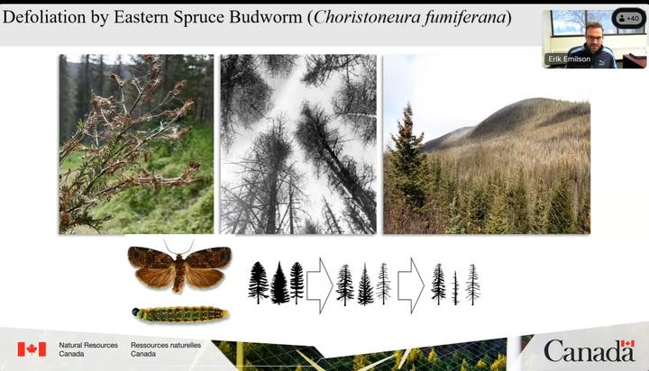

Impacts of defoliation by spruce budworm on freshwater ecosystems in Canada

Image credit: GLFC Science
Date
Dec 8, 2023 11:00 AM
Location
Great Lakes Forestry Centre
Erik J.S. Emilson
Research Scientist, Watershed Ecology Team Lead, Associate Editor CJFR
I am interested in how forests support freshwater ecosystem services. My research combines microbial and molecular approaches to undertand how forest productivity and disturbances affect ecosystem functions in headwater streams and lakes.